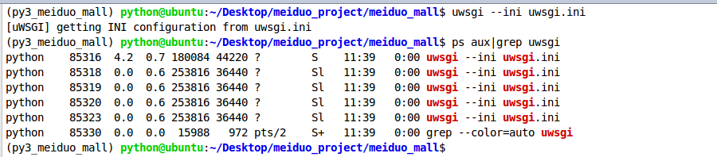

uWSGI
uWSGI运行美多商城
1.安装
uwsgi包
- Django的程序通常使用
uwsgi服务器来运行。
$ pip install uwsgi
2.准备
uwsgi服务器配置文件
- 新建uwsgi.ini配置文件
[uwsgi]
# 使用Nginx连接时使用，Django程序所在服务器地址
#socket=172.16.21.25:8001
# 直接做web服务器使用，Django程序所在服务器地址
http=172.16.21.25:8001
# 项目目录
chdir=项目路径/meiduo_project/meiduo_mall
# 项目中wsgi.py文件的目录，相对于项目目录
wsgi-file=meiduo_mall/wsgi.py
# 进程数
processes=4
# 线程数
threads=2
# uwsgi服务器的角色
master=True
# 存放进程编号的文件
pidfile=uwsgi.pid
# 日志文件
daemonize=uwsgi.log
# 指定依赖的虚拟环境
virtualenv=虚拟环境路径/.virtualenvs/meiduo_mall
3.管理
uwsgi服务器
# 启动
$ uwsgi --ini uwsgi.ini
# 关闭
$ uwsgi --stop uwsgi.pid
